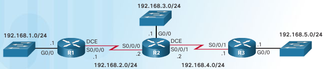
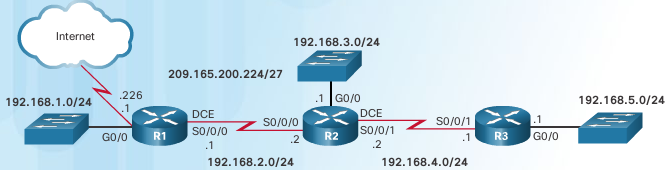

CCNA¶
Networking Fundamentals¶
Add fundamentals content here
Routing and Switching Fundamentals¶
Chapter 1 Routing Concepts¶
basic concepts¶
- RAM
- Running IOS Running config file IP routing tables, ARP tables, CDP info Packet buffer
- ROM
- Bootup instructions (System Bootstrap) Basic diagnostic software (POST) Limited IOS in case router cannot load full featured IOS(ROMMON)
- NVRAM
- Startup config file
- FLASH
- IOS
view their size via:
show versionbootup process lookup for ios
- flash memory
- TFTP server
- ROM
to change this order, change configuration register
Router’s 3 packet-forwarding mechanisms¶
- Process Switching
- An older packet forwarding mechanism still available for Cisco routers. When a packet arrives on an interface, it is forwarded to the control plane where the CPU matches the destination address with an entry in its routing table, and then determines the exit interface and forwards the packet. It is important to understand that the router does this for every packet, even if the destination is the same for a stream of packets. This process-switching mechanism is very slow and rarely implemented in modern networks.
- Fast switching
- This is a common packet forwarding mechanism which uses a fast-switching cache to store next-hop information. When a packet arrives on an interface, it is forwarded to the control plane where the CPU searches for a match in the fast-switching cache. If it is not there, it is process-switched and forwarded to the exit interface. The flow information for the packet is also stored in the fast-switching cache. If another packet going to the same destination arrives on an interface, the next-hop information in the cache is re-used without CPU intervention.
- Cisco Express Forwarding (CEF)
- CEF is the most recent and preferred Cisco IOS packet-forwarding mechanism. Like fast switching, CEF builds a Forwarding Information Base (FIB), and an adjacency table. However, the table entries are not packet-triggered like fast switching but change-triggered such as when something changes in the network topology. Therefore, when a network has converged, the FIB and adjacency tables contain all the information a router would have to consider when forwarding a packet. The FIB contains pre-computed reverse lookups, next hop information for routes including the interface and Layer 2 information. Cisco Express Forwarding is the fastest forwarding mechanism and the preferred choice on Cisco routers.
Loopback interfaces¶
Multiple loopback interfaces can be enabled on a router. The IPv4 address for each loopback interface must be unique and unused by any other interface.
configure loopback interface¶
Router(config)# interface loopback 0
Router(config-if)# ip address 10.0.0.1 255.255.255.0
Router(config-if)# exit
Filtering parameters¶
Used after the pipe are:
- section
- Shows entire section that starts with the filtering expression .. highlight:: R1# show running-config | section line vty
- include
- Includes all output lines that match the filtering expression .. highlight:: R1# show ip interface brief | include up
- exclude
- Excludes all output lines that match the filtering expression .. highlight:: R1# show ip interface brief | exclude unassigned
- begin
- hows all the output lines from a certain point, starting with the line that matches the filtering expression .. highlight:: R1# show ip route | begin Gateway R1# show running-config | begin line
History commands¶
- set/show history
R1# terminal history size 200 R1# show history
Show command examples¶
- show interfaces
TA(config)#do show interfaces GigabitEthernet0/0 is up, line protocol is up (connected) OB Hardware is CN Gigabit Ethernet, address is 0004.9ae8.b901 (bia 0004.9ae8.b901) Description: Link RTA G0/0 to SW1 G0/1 Internet address is 10.10.10.1/24 MTU 1500 bytes, BW 1000000 Kbit, DLY 10 usec, reliability 255/255, txload 1/255, rxload 1/255 Encapsulation ARPA, loopback not set Keepalive set (10 sec) Full-duplex, 100Mb/s, media type is RJ45 output flow-control is unsupported, input flow-control is unsupported ARP type: ARPA, ARP Timeout 04:00:00, Last input 00:00:08, output 00:00:05, output hang never Last clearing of "show interface" counters never Input queue: 0/75/0 (size/max/drops); Total output drops: 0 Queueing strategy: fifo Output queue :0/40 (size/max) 5 minute input rate 0 bits/sec, 0 packets/sec 5 minute output rate 0 bits/sec, 0 packets/sec 0 packets input, 0 bytes, 0 no buffer Received 0 broadcasts, 0 runts, 0 giants, 0 throttles 0 input errors, 0 CRC, 0 frame, 0 overrun, 0 ignored, 0 abort 0 watchdog, 1017 multicast, 0 pause input 0 input packets with dribble condition detected 0 packets output, 0 bytes, 0 underruns 0 output errors, 0 collisions, 2 interface resets 0 unknown protocol drops 0 babbles, 0 late collision, 0 deferred 0 lost carrier, 0 no carrier 0 output buffer failures, 0 output buffers swapped out
- show ip interface
SW1#show ip interface Vlan1 is up, line protocol is up Internet address is 10.10.10.2/24 Broadcast address is 255.255.255.255 Address determined by setup command MTU is 1500 bytes Helper address is not set Directed broadcast forwarding is disabled Outgoing access list is not set Inbound access list is not set Proxy ARP is enabled Local Proxy ARP is disabled Security level is default Split horizon is enabled ICMP redirects are always sent ICMP unreachables are always sent ICMP mask replies are never sent IP fast switching is disabled IP fast switching on the same interface is disabled IP Null turbo vector IP multicast fast switching is disabled IP multicast distributed fast switching is disabled IP route-cache flags are None Router Discovery is disabled IP output packet accounting is disabled IP access violation accounting is disabled TCP/IP header compression is disabled RTP/IP header compression is disabled Probe proxy name replies are disabled Policy routing is disabled Network address translation is disable WCCP Redirect outbound is disabled WCCP Redirect inbound is disabled WCCP Redirect exclude is disabled BGP Policy Mapping is disabled
- show ip int brief
RTA(config)#do show ip int brief Interface IP-Address OK? Method Status Protocol GigabitEthernet0/0 10.10.10.1 YES manual up up GigabitEthernet0/1 10.10.20.1 YES manual up up Vlan1 unassigned YES unset administratively down down
- show ip interface
RTA(config)#do show ip interface GigabitEthernet0/0 is up, line protocol is up (connected) Internet address is 10.10.10.1/24 Broadcast address is 255.255.255.255 Address determined by setup command MTU is 1500 bytes Helper address is not set Directed broadcast forwarding is disabled Outgoing access list is not set Inbound access list is not set Proxy ARP is enabled Security level is default Split horizon is enabled ICMP redirects are always sent ICMP unreachables are always sent ICMP mask replies are never sent IP fast switching is disabled IP fast switching on the same interface is disabled IP Flow switching is disabled IP Fast switching turbo vector IP multicast fast switching is disabled IP multicast distributed fast switching is disabled Router Discovery is disabled IP output packet accounting is disabled IP access violation accounting is disabled TCP/IP header compression is disabled RTP/IP header compression is disabled Probe proxy name replies are disabled Policy routing is disabled Network address translation is disabled BGP Policy Mapping is disabled Input features: MCI Check WCCP Redirect outbound is disabled WCCP Redirect inbound is disabled WCCP Redirect exclude is disabled GigabitEthernet0/1 is up, line protocol is up (connected) Internet address is 10.10.20.1/24 Broadcast address is 255.255.255.255 Address determined by setup command MTU is 1500 bytes Helper address is not set Directed broadcast forwarding is disabled Outgoing access list is not set Inbound access list is not set Proxy ARP is enabled Security level is default Split horizon is enabled ICMP redirects are always sent ICMP unreachables are always sent ICMP mask replies are never sent IP fast switching is disabled IP fast switching on the same interface is disabled IP Flow switching is disabled IP Fast switching turbo vector IP multicast fast switching is disabled IP multicast distributed fast switching is disabled Router Discovery is disabled IP output packet accounting is disabled IP access violation accounting is disabled TCP/IP header compression is disabled RTP/IP header compression is disabled Probe proxy name replies are disabled Policy routing is disabled Network address translation is disabled BGP Policy Mapping is disabled Input features: MCI Check WCCP Redirect outbound is disabled WCCP Redirect inbound is disabled WCCP Redirect exclude is disabled Vlan1 is administratively down, line protocol is down Internet protocol processing disabled
- show ip route
RTA(config)#do show ip route Codes: L - local, C - connected, S - static, R - RIP, M - mobile, B - BGP D - EIGRP, EX - EIGRP external, O - OSPF, IA - OSPF inter area N1 - OSPF NSSA external type 1, N2 - OSPF NSSA external type 2 E1 - OSPF external type 1, E2 - OSPF external type 2, E - EGP i - IS-IS, L1 - IS-IS level-1, L2 - IS-IS level-2, ia - IS-IS inter area * - candidate default, U - per-user static route, o - ODR P - periodic downloaded static route -- Gateway of last resort is not set -- 10.0.0.0/8 is variably subnetted, 4 subnets, 2 masks C 10.10.10.0/24 is directly connected, GigabitEthernet0/0 L 10.10.10.1/32 is directly connected, GigabitEthernet0/0 C 10.10.20.0/24 is directly connected, GigabitEthernet0/1 L 10.10.20.1/32 is directly connected, GigabitEthernet0/1- show ip route connected
RTA(config)#do show ip route connected C 10.10.10.0/24 is directly connected, GigabitEthernet0/0 C 10.10.20.0/24 is directly connected, GigabitEthernet0/1
ARP - Neighbor Advertisement/Sollicitation¶
A similar process is used for IPv6 packets. Instead of the ARP process, IPv6 address resolution uses ICMPv6 Neighbor Solicitation and Neighbor Advertisement messages. IPv6-to-MAC address mapping are kept in a table similar to the ARP cache, called the neighbor cache.
MAC addresses on Serial Interfaces¶
When the interface is a point-to-point (P2P) serial connection, the router encapsulates the IPv4 packet into the proper data link frame format used by the exit interface (HDLC, PPP, etc.). Because there are no MAC addresses on serial interfaces, R2 sets the data link destination address to an equivalent of a broadcast. The router does not need to know any info about the destination L2 address, so the router just sends the frame out the corresponding serial interface. No source address is required on a P2P serial connection
HDLC frames can be transmitted over synchronous or asynchronous serial communication links. Those links have no mechanism to mark the beginning or end of a frame, so the beginning and end of each frame has to be identified. This is done by using a frame delimiter, or flag, which is a unique sequence of bits that is guaranteed not to be seen inside a frame. This sequence is ‘01111110’, or, in hexadecimal notation, 0x7E. Each frame begins and ends with a frame delimiter. A frame delimiter at the end of a frame may also mark the start of the next frame. A sequence of 7 or more consecutive 1-bits within a frame will cause the frame to be aborted.
| Flag 7E | Address | Control | Protocol | Data | FCS | Flag 7E | |
| 8 bits | 8 bits | 8 bits | 16 bits | ~ length 0 or x*8 | 16b | 8 bits | |
The Address field is used to specify the type of packet contained in the cHDLC frame; 0x0F for Unicast and 0x8F for Broadcast packets. The Control field is always set to zero (0x00). The Protocol Code field is used to specify the protocol type encapsulated within the cHDLC frame (e.g. 0x0800 for Internet Protocol).
Packet Forwarding Decision Process¶
Directly Connected Interface? Yes -> Check ARP cache (ARP request if necessary) and forward to host on local subnet Remote Network? Yes -> Encapsulate the frame and forward out of the exit interface to the next hop else Gateway of last resort or drop
Routing BEST PATH selection¶
- RIP
- Routing Information Protocol - Hop count
- OSPF
- Open Shortest Path First - Cisco’s cost based on CUMULATIVE bandwidth from source to destination
- EIGRP
- Enhanced Interior Gateway Routing Protocol - Bandwidth, delay, load, reliability (bladder)
Note
two or more paths with identical metrics = LOAD BALANCING
Note
Equal cost load balancing can be cfd to use both dynamic routing protocols and static routes ONLY EIGRP support UNEQUAL COST LOAD BALANCING
ADMINISTRATIVE DISTANCE¶
For example, if both RIP and EIGRP are configured on a router, both routing protocols may learn of the same destination network. However, each routing protocol may decide on a different path to reach the destination based on that routing protocol’s metrics. RIP chooses a path based on hop count, whereas EIGRP chooses a path based on its composite metric. How does the router know which route to use?
Cisco IOS uses what is known as the administrative distance (AD) to determine the route to install into the IP routing table. The AD represents the “trustworthiness” of the route; the lower the AD, the more trustworthy the route source. For example, a static route has an AD of 1, whereas an EIGRP-discovered route has an AD of 90. Given two separate routes to the same destination, the router chooses the route with the lowest AD. When a router has the choice of a static route and an EIGRP route, the static route takes precedence.
Default Distance Value Table
This table lists the administrative distance default values of the protocols that Cisco supports:
Routing Protocol Administrative distance Directly connected interface 0 Static route out an interface 1 Static route to next-hop address 1 DMNR - Dynamic Mobile Network Routing 3 EIGRP summary route 5 External BGP 20 Internal EIGRP 90 IGRP 100 OSPF 110 IS-IS 115 Routing Information Protocol (RIP) 120 Exterior Gateway Protocol (EGP) 140 On Demand Routing (ODR) 160 External EIGRP 170 Internal BGP 200 Next Hop Resolution Protocol (NHRP) 250 Floating Static Route (ex. DHCP-learned) 254 Unknown (Others) 255 Note
If the administrative distance is 255, the router does not believe the source of that route and does not install the route in the routing table. Since IOS 12.2, the administrative distance of a static route with an exit interface is 1. Only the interface itself has an administrative distance of 0, since a route cannot have a distance of less than 1. Directly connected routes have an administrative distance of 0.
Changing Administrative Distance¶
When you use route redistribution, occasionally you need to modify the administrative distance of a protocol so that it takes precedence. For example, if you want the router to select RIP-learned routes (default value 120) rather than IGRP-learned routes (default value 100) to the same destination, you must increase the administrative distance for IGRP to 120+, or decrease the administrative distance of RIP to a value less than 100.
You can modify the administrative distance of a protocol through the distance command in the routing process subconfiguration mode. This command specifies that the administrative distance is assigned to the routes learned from a particular routing protocol. You need to use this procedure generally when you migrate the network from one routing protocol to another, and the latter has a higher administrative distance. However, a change in the administrative distance can lead to routing loops and black holes.
Warning
use caution if you change the administrative distance.
R1(config)#router eigrp 10
R1(config-router)#distance eigrp xx yy
where xx representes the new value of internal administrative distance and yy representes the new value of the external administrative distance.
example of changing AD for rip¶
Here is an example that shows two routers, R1 and R2, connected through Ethernet. The loopback interfaces of the routers are also advertised with RIP and IGRP on both the routers. You can observe that the IGRP routes are preferred over the RIP routes in the routing table because the administrative distance is 100.
R1#show ip route
Gateway of last resort is not set
172.16.0.0/24 is subnetted, 1 subnets
C 172.16.1.0 is directly connected, Ethernet0
I 10.0.0.0/8 [100/1600] via 172.16.1.200, 00:00:01, Ethernet0
C 192.168.1.0/24 is directly connected, Loopback0
R2#show ip route
Gateway of last resort is not set
172.16.0.0/24 is subnetted, 1 subnets
C 172.16.1.0 is directly connected, Ethernet0
C 10.0.0.0/8 is directly connected, Loopback0
I 192.168.1.0/24 [100/1600] via 172.16.1.100, 00:00:33,
In order to enable the router to prefer RIP routes to IGRP, configure the distance command on R1 like this:
R1(config)#router rip
R1(config-router)#distance 90
Now look at the routing table. The routing table shows that the router prefers the RIP routes. The router learns RIP routes with an administrative distance of 90, although the default is 120.
Note
The new administrative distance value is relevant only to the routing process of a single router (in this case R1). R2 still has IGRP routes in the routing table.
R1#show ip route
Gateway of last resort is not set
172.16.0.0/24 is subnetted, 1 subnets
C 172.16.1.0 is directly connected, Ethernet0
R 10.0.0.0/8 [90/1] via 172.16.1.200, 00:00:16, Ethernet0
C 192.168.1.0/24 is directly connected, Loopback0
R2#show ip route
Gateway of last resort is not set
172.16.0.0/24 is subnetted, 1 subnets
C 172.16.1.0 is directly connected, Ethernet0
C 10.0.0.0/8 is directly connected, Loopback0
I 192.168.1.0/24 [100/1600] via 172.16.1.100, 00:00:33,
Note
There are no general guidelines to assign administrative distances because each network has varied requirements. You must determine a reasonable matrix of administrative distances for the network as a whole. Similarly, a directly connected route with an AD of 0 takes precedence over a static route with an AD of 1.
Other applications of A.D.¶
One common reason to change the administrative distance of a route is when you use Static Routes to backup an existing IGP route. This is normally used to bring up a backup link when the primary fails.
For example, assume that you use the routing table from R1. However, in this case, there is also an ISDN line that you can use as a backup if the primary connection fails. Here is an example of a Floating Static for this route:
ip route 10.0.0.0 255.0.0.0 Dialer 1 250
!--- Note: The Administrative Distance is set to 250.
If the Ethernet interfaces fail, or if you manually bring down the Ethernet interfaces, the floating static route is installed into the routing table. All traffic destined for the 10.0.0.0/8 network is then routed out of the Dialer 1 interface and over the backup link. The routing table appears similar to this after the failure:
R1#show ip route
Gateway of last resort is not set
172.16.0.0/24 is subnetted, 1 subnets
C 172.16.1.0 is directly connected, Ethernet0
S 10.0.0.0/8 is directly connected, Dialer1
C 192.168.1.0/24 is directly connected, Loopback0
Directly Connected n Remote Network Routes¶
- Directly connected routes
- These routes come from the active router interfaces. Routers add a directly connected route when an interface is configured with an IP address and is activated.
- Remote routes
- These are remote networks connected to other routers. Routes to these networks can either be statically configured or dynamically learned through dynamic routing protocols.
The sources of the routing table entries are identified by a code. The code identifies how the route was learned. For instance, common codes include:
- L - Identifies the address assigned to a router’s interface. This allows the router to efficiently determine when it receives a packet for the interface instead of being forwarded.
- C - Identifies a directly connected network.
- S - Identifies a static route created to reach a specific network.
- D - Identifies a dynamically learned network from another router using EIGRP.
- O - Identifies a dynamically learned network from another router using the OSPF routing protocol.
D 10.1.1.0/24 [90/2170112] via 209.165.200.226, 00:00:05, Serial0/0/0
- Route source - Identifies how the route was learned.
- Destination network - Identifies the address of the remote network.
- Administrative distance - Identifies the trustworthiness of the route source. Lower values indicate preferred route source.
- Metric - Identifies the value assigned to reach the remote network. Lower values indicate preferred routes.
- Next-hop - Identifies the IPv4 address of the next router to forward the packet to.
- Route timestamp - Identifies how much time has passed since the route was learned.
- Outgoing interface - Identifies the exit interface to use to forward a packet toward the final destination.
The IP routing process¶
IP routing example using two hosts and one router
User on Host_A pinged Host_B’s IP address. Routing doesn’t get any simpler than this, but it still involves a lot of steps, so let’s work through them now:
Internet Control Message Protocol (ICMP) creates an echo request payload, which is simply the alphabet in the data field.
ICMP hands that payload to Internet Protocol (IP), which then creates a packet. At a minimum, this packet contains an IP source address, an IP destination address, and a Protocol field with 01h. Don’t forget that Cisco likes to use 0x in front of hex characters, so this could also look like 0x01. This tells the receiving host to whom it should hand the payload when the destination is reached—in this example, ICMP.
Once the packet is created, IP determines whether the destination IP address is on the local network or a remote one.
Since IP has determined that this is a remote request, the packet must be sent to the default gateway so it can be routed to the remote network. The Registry in Windows is parsed to find the configured default gateway.
The default gateway of Host_A is configured to 172.16.10.1. For this packet to be sent to the default gateway, the hardware address of the router’s interface Ethernet 0, which is configured with the IP address of 172.16.10.1, must be known. Why? So the packet can be handed down to the Data Link layer, framed, and sent to the router’s interface that’s connected to the 172.16.10.0 network. Because hosts communicate only via hardware addresses on the local LAN, it’s important to recognize that for Host_A to communicate to Host_B, it has to send packets to the Media Access Control (MAC) address of the default gateway on the local network. MAC addresses are always local on the LAN and never go through and past a router.
Next, the Address Resolution Protocol (ARP) cache of the host is checked to see if the IP address of the default gateway has already been resolved to a hardware address. If it has, the packet is then free to be handed to the Data Link layer for framing. Remember that the hardware destination address is also handed down with that packet.
If the hardware address isn’t already in the ARP cache of the host, an ARP broadcast will be sent out onto the local network to search for the 172.16.10.1 hardware address. The router then responds to the request and provides the hardware address of Ethernet 0, and the host caches this address.
Once the packet and destination hardware address are handed to the Data Link layer, the LAN driver is used to provide media access via the type of LAN being used, which is Ethernet in this case. A frame is then generated, encapsulating the packet with control information. Within that frame are the hardware destination and source addresses plus, in this case, an Ether-Type field, which identifies the specific Network layer protocol that handed the packet to the Data Link layer. In this instance, it’s IP. At the end of the frame is something called a Frame Check Sequence (FCS) field that houses the result of the cyclic redundancy check (CRC). The frame would look something like what I’ve detailed in Figure 9.3. It contains Host A’s hardware (MAC) address and the destination hardware address of the default gateway. It does not include the remote host’s MAC address—remember that!
Once the frame is completed, it’s handed down to the Physical layer to be put on the physical medium (in this example, twisted-pair wire) one bit at a time.
Every device in the collision domain receives these bits and builds the frame. They each run a CRC and check the answer in the FCS field. If the answers don’t match, the frame is discarded:
* If the CRC matches, then the hardware destination address is checked to see if it matches (which, in this example, is the router’s interface Ethernet 0). * If it’s a match, then the Ether-Type field is checked to find the protocol used at the Network layer.
The packet is pulled from the frame, and what is left of the frame is discarded. The packet is handed to the protocol listed in the Ether-Type field—it’s given to IP.
IP receives the packet and checks the IP destination address. Since the packet’s destination address doesn’t match any of the addresses configured on the receiving router itself, the router will look up the destination IP network address in its routing table.
The routing table must have an entry for the network 172.16.20.0 or the packet will be discarded immediately and an ICMP message will be sent back to the originating device with a destination network unreachable message.
If the router does find an entry for the destination network in its table, the packet is switched to the exit interface—in this example, interface Ethernet 1. The following output displays the Lab_A router’s routing table. The C means “directly connected.” No routing protocols are needed in this network since all networks (all two of them) are directly connected:
* .. code:: Lab_A>sh ip route C 172.16.10.0 is directly connected, Ethernet0 L 172.16.10.1/32 is directly connected, Ethernet0 C 172.16.20.0 is directly connected, Ethernet1 L 172.16.20.1/32 is directly connected, Ethernet1The router packet-switches the packet to the Ethernet 1 buffer.
The Ethernet 1 buffer needs to know the hardware address of the destination host and first checks the ARP cache:
* If the hardware address of Host_B has already been resolved and is in the router’s ARP cache, then the packet and the hardware address will be handed down to the Data Link layer to be framed. Let’s take a look at the ARP cache on the Lab_A router by using the show ip arp command:Lab_A#sh ip arp Protocol Address Age(min) Hardware Addr Type Interface Internet 172.16.20.1 - 00d0.58ad.05f4 ARPA Ethernet1 Internet 172.16.20.2 3 0030.9492.a5dd ARPA Ethernet1 Internet 172.16.10.1 - 00d0.58ad.06aa ARPA Ethernet0 Internet 172.16.10.2 12 0030.9492.a4ac ARPA Ethernet0 * Now if the hardware address hasn’t already been resolved, the router will send an ARP request out E1 looking for the 172.16.20.2 hardware address. Host_B responds with its hardware address, and the packet and destination hardware addresses are then both sent to the Data Link layer for framing.The Data Link layer creates a frame with the destination and source hardware addresses, Ether-Type field, and FCS field at the end. The frame is then handed to the Physical layer to be sent out on the physical medium one bit at a time.
Host_B receives the frame and immediately runs a CRC. If the result matches the information in the FCS field, the hardware destination address will then be checked next. If the host finds a match, the Ether-Type field is then checked to determine the protocol that the packet should be handed to at the Network layer—IP in this example.
At the Network layer, IP receives the packet and runs a CRC on the IP header. If that passes, IP then checks the destination address. Since a match has finally been made, the Protocol field is checked to find out to whom the payload should be given.
The payload is handed to ICMP, which understands that this is an echo request. ICMP responds to this by immediately discarding the packet and generating a new payload as an echo reply.
A packet is then created including the source and destination addresses, Protocol field, and payload. The destination device is now Host_A.
IP then checks to see whether the destination IP address is a device on the local LAN or on a remote network. Since the destination device is on a remote network, the packet needs to be sent to the default gateway.
The default gateway IP address is found in the Registry of the Windows device, and the ARP cache is checked to see if the hardware address has already been resolved from an IP address.
Once the hardware address of the default gateway is found, the packet and destination hardware addresses are handed down to the Data Link layer for framing.
The Data Link layer frames the packet of information and includes the following in the header:
* The destination and source hardware addresses * The Ether-Type field with 0x0800 (IP) in it * The FCS field with the CRC result in tow
The frame is now handed down to the Physical layer to be sent out over the network medium one bit at a time.
The router’s Ethernet 1 interface receives the bits and builds a frame. The CRC is run, and the FCS field is checked to make sure the answers match.
Once the CRC is found to be okay, the hardware destination address is checked. Since the router’s interface is a match, the packet is pulled from the frame and the Ether-Type field is checked to determine which protocol the packet should be delivered to at the Network layer.
The protocol is determined to be IP, so it gets the packet. IP runs a CRC check on the IP header first and then checks the destination IP address:
.. warning:: IP does not run a complete CRC as the Data Link layer does—it only checks the header for errors. * Since the IP destination address doesn’t match any of the router’s interfaces, the routing table is checked to see whether it has a route to 172.16.10.0. If it doesn’t have a route over to the destination network, the packet will be discarded immediately. I want to take a minute to point out that this is exactly where the source of confusion begins for a lot of administrators because when a ping fails, most people think the packet never reached the destination host. But as we see here, that’s not always the case. All it takes for this to happen is for even just one of the remote routers to lack a route back to the originating host’s network and— poof!—the packet is dropped on the return trip, not on its way to the host!
Note
Just a quick note to mention that when (and if) the packet is lost on the way back to the originating host, you will typically see a request timed-out message because it is an unknown error. If the error occurs because of a known issue, such as if a route is not in the routing table on the way to the destination device, you will see a destination unreachable message. This should help you determine if the problem occurred on the way to the destination or on the way back.
- In this case, the router happens to know how to get to network 172.16.10.0—the exit interface is Ethernet 0—so the packet is switched to interface Ethernet 0.
- The router then checks the ARP cache to determine whether the hardware address for 172.16.10.2 has already been resolved.
- Since the hardware address to 172.16.10.2 is already cached from the originating trip to Host_B, the hardware address and packet are then handed to the Data Link layer.
- The Data Link layer builds a frame with the destination hardware address and source hardware address and then puts IP in the Ether-Type field. A CRC is run on the frame and the result is placed in the FCS field.
- The frame is then handed to the Physical layer to be sent out onto the local network one bit at a time.
- The destination host receives the frame, runs a CRC, checks the destination hardware address, then looks into the Ether-Type field to find out to whom to hand the packet.
- IP is the designated receiver, and after the packet is handed to IP at the Network layer, it checks the Protocol field for further direction. IP finds instructions to give the payload to ICMP, and ICMP determines the packet to be an ICMP echo reply.
- ICMP acknowledges that it has received the reply by sending an exclamation point (!) to the user interface. ICMP then attempts to send four more echo requests to the destination host.
The key point here is that if you had a much larger network, the process would be the same. It’s just that the larger the internetwork, the more hops the packet goes through before it finds the destination host.
Note
It’s super-important to remember that when Host_A sends a packet to Host_B, the destination hardware address used is the default gateway’s Ethernet interface. Why? Because frames can’t be placed on remote networks—only local networks. So packets destined for remote networks must go through the default gateway.
To see which packet switching method your router interface is using, use the command show ip interface.
Chapter 2 Static Routes¶
ipv4 syntax¶
Router(config)# ip route network mask { next-hop-ip | exit-intf }
A static route is identified in the routing table with the code ‘S’.
To configure an IPv4 default static route, use the following command:
Router(config)# ip route 0.0.0.0 0.0.0.0 { exit-intf | next-hop-ip }
combination of exit interface and next hop¶
R2(config)# ip route 192.168.2.0 255.255.255.0 s0/0/1 192.168.1.1
When to Use Static Routes¶
Static routing has three primary uses:
# Providing ease of routing table maintenance in smaller networks that are not expected to grow significantly. # Routing to and from stub networks. A STUB NETWORK is a network accessed by a single route, and the router has ONLY ONE NEIGHBOR. # Using a single default route to represent a path to any network that does not have a more specific match with another route in the routing table.
benefits:
- Are not advertised over the network, resulting in better security
- Use less bandwidth than dynamic routing protocols
- Use known paths to send data
Note
Default routes are used to send traffic to any destination beyond the next upstream router.
- Use static routes to…
- Connect to a specific network
- Connect a stub router
- Summarize routing table entries
- Create a backup route
Default static route¶
ip route 0.0.0.0 0.0.0.0 nexthopip | exitif
Note
Default static routes are used when no other routes in the routing table match the packet destination IP address. In other words, when a more specific match does not exist. A common use is when connecting a company’s edge router to the ISP network. When a router has only one other router to which it is connected. In this situation, the router is known as a stub router.
Summary static route¶
Representing multiple networks
172.20.0.0/16 172.21.0.0/16 172.22.0.0/16 172.23.0.0/16 as 172.20.0.0/14
ip route 172.20.0.0 255.252.0.0 nexthopip | exitif
Floating static route¶
Another type of static route is a floating static route. Floating static routes are static routes that are used to provide a backup path to a primary static or dynamic route, in the event of a link failure.
Note
The floating static route is only used when the primary route is not available.
To accomplish this, the floating static route is configured with a higher administrative distance than the primary route. The administrative distance represents the trustworthiness of a route. If multiple paths to the destination exist, the router will choose the path with the lowest administrative distance.
The next hop can be identified by an IP address, exit interface, or both. How the destination is specified creates one of the three following route types:
- Next-hop route
- Only the next-hop IP address is specified
- Directly connected static route
- Only the router exit interface is specified
- Fully specified static route
- The next-hop IP address and exit interface are specified
ip route 172.16.1.0 255.255.255.0 G0/1 172.16.2.2
Fully Specified Static Route¶
In a fully specified static route, both the exit interface and the next-hop IP address are specified. This is another type of static route that is used in older IOSs, prior to CEF.
Note
This form of static route is used when the exit interface is a multi-access interface and it is necessary to explicitly identify the next hop.
The next hop must be directly connected to the specified exit interface.
example¶
PC2
|
|_
172.16.1.0/24 |__|
|
|
G0/0|.1
_|__
(_R2_)
S0/0/0 /.2 .2\ S0/0/1
/ \ DCE
172.16.2.0/24/ \/\
/ \ 192.168.1.0/24
.1/ \.1
__ /__S0/0/0 S0/0/1_\ __
PC1------|__|---------(_R1_) DCE (_R3_)-----|__|----PC3
G0/0 .1 .1 G0/0
172.16.3.0/24 192.168.2.0/24
Suppose that the network link between R1 and R2 is an Ethernet link and that the GigabitEthernet 0/1 interface of R1 is connected to that network, as shown in Figure 1. CEF is not enabled. To eliminate the recursive lookup,(map a next hop ip to what interface that is = if CEF not enabled) a directly connected static route can be implemented using the following command:
R1(config)# ip route 192.168.2.0 255.255.255.0 GigabitEthernet 0/1
However, this may cause unexpected or inconsistent results. The difference between an Ethernet multi-access network and a point-to-point serial network is that a point-to-point serial network has only one other device on that network, the router at the other end of the link. With Ethernet networks, there may be many different devices sharing the same multi-access network, including hosts and even multiple routers. By only designating the Ethernet exit interface in the static route, the router will not have sufficient information to determine which device is the next-hop device.
R1 knows that the packet needs to be encapsulated in an Ethernet frame and sent out the GigabitEthernet 0/1 interface. However, R1 does not know the next-hop IPv4 address; therefore, it cannot determine the destination MAC address for the Ethernet frame.
Depending upon the topology and the configurations on other routers, this static route may or may not work. It is recommended that when the exit interface is an Ethernet network, that a fully specified static route is used, including both the exit interface and the next-hop address.
R3(config)# ip route 172.16.1.0 255.255.255.0 s0/0/1 192.168.1.2
As shown in Figure 2, when forwarding packets to R2, the exit interface is GigabitEthernet 0/1 and the next-hop IPv4 address is 172.16.2.2.
Note
With the use of CEF, a fully specified static route is no longer necessary. A static route using a next-hop address should be used.
R1(config)# ip route 0.0.0.0 0.0.0.0 172.16.2.2
R1#show ip route static
R1(config)#do show ip route static
172.31.0.0/16 is variably subnetted, 7 subnets, 5 masks
S 172.31.0.0/24 [1/0] via 172.31.1.193
S 172.31.1.128/26 [1/0] via 172.31.1.193
S 172.31.1.196/30 [1/0] via 172.31.1.193
R2(config)#ip route 172.31.1.0 255.255.255.128 S0/0/0
%Default route without gateway, if not a point-to-point interface, may impact performance
R2#show ip route ?
WORD Network to display information about or hostname
bgp Border Gateway Protocol (BGP)
connected Connected
eigrp Enhanced Interior Routing Protocol (EIGRP)
ospf Open Shortest Path First (OSPF)
rip Routing Information Protocol (RIP)
static Static routes
summary Summary of all routes
| Output Modifiers
<cr>
R2#show ip route connected
C 172.31.0.0/24 is directly connected, GigabitEthernet0/0
C 172.31.1.192/30 is directly connected, Serial0/0/0
C 172.31.1.196/30 is directly connected, Serial0/0/1
R3(config)#ip route 0.0.0.0 0.0.0.0 Serial 0/0/1
%Default route without gateway, if not a point-to-point interface, may impact performance
R3(config)#
ipv6 static routing¶
R1(config)# ipv6 unicast-routing
R1(config)# show ipv6 route
R1#ping ipv6 2001.DB8:ACAD:4::2
R1(config)# ipv6 route 2001.DB8:ACAD:2::/64 2001.DB8:ACAD:4::2
R1(config)# show ipv6 route
As with IPv4, before any packet is forwarded by the router, the routing table process must resolve the route to determine the exit interface to use to forward the packet. The route resolvability process will vary depending upon the type of forwarding mechanism being used by the router. CEF (Cisco Express Forwarding) is the default behavior on most platforms running IOS 12.0 or later.
When a packet is destined for the 2001:DB8:ACAD:3::/64 network, R1:
- Looks for a match in the routing table and finds that it has to forward the packets to the next-hop IPv6 address 2001:DB8:ACAD:4::2. Every route that references only a next-hop IPv6 address and does not reference an exit interface must have the next-hop IPv6 address resolved using another route in the routing table with an exit interface.
- R1 must now determine how to reach 2001:DB8:ACAD:4::2; therefore, it searches a second time looking for a match. In this case, the IPv6 address matches the route for the directly connected network 2001:DB8:ACAD:4::/64 with the exit interface Serial 0/0/0. This lookup tells the routing table process that this packet is forwarded out of that interface.
Warning
Therefore, it actually takes two routing table lookup processes to forward any packet to the 2001:DB8:ACAD:3::/64 network. When the router has to perform multiple lookups in the routing table before forwarding a packet, it is performing a process known as a recursive lookup.
Note
A recursive static IPv6 route is valid (that is, it is a candidate for insertion in the routing table) only when the specified next hop resolves, either directly or indirectly, to a valid exit interface.
ipv6 default static route¶
PC2
|
|_
2001:db8:acad:2::/64 |__|
|
|
G0/0|:1
_|__
(_R2_)
S0/0/0 /2 :2\ S0/0/1
/ \ DCE
/ \/\
2001:db8:acad:4::/64 / \ 2001:db8:acad:5::/64
:1/ \:1
__ /__S0/0/0 S0/0/1_\ __
PC1-----|__|---------(_R1_) DCE (_R3_)-----|__|----PC3
G0/0 :1 :1 G0/0
2001:db8:acad:1::/64 2001:db8:acad:3::/64
R1(config)# ipv6 route ::/0 s0/0/0
Note
The ‘S’ signifies that the route source is a static route. Unlike the IPv4 static route, there is no asterisk (*) or Gateway of Last Resort explicitly identified.
ipv6 route ipv6-prefix/prefix-length {ipv6-address|interface-type interface-number}
-
R2(config)# ipv6 route 2001:0DB8:ACAD:1::/64 2001:0DB8:ACAD:3::1
R2(config)# ipv6 route 2001:0DB8:ACAD:2::/64 s0/0/0
Router is only connected to R2 = stub router = default static route
R1(config)#ipv6 route ::/0 2001:DB8:ACAD:4::2
verify a default static route¶
R1# show ipv6 route static
R1# ping 2001:DB8:ACAD:4::2 source 2001:DB8:ACAD:1::2
Troubleshooting a missing route¶
- ping
- traceroute
- show ip route
- show ip interface brief
- show cdp neighbors detail
Solve a connectivity problem¶
- ping 192.168.2.1 source g0/0
- traceroute 192.168.2.1
- show ip route | begin Gateway
- show running-config | section ip route
Chapter 3 Dynamic Routing¶
Router metrics are metrics used by a router to make routing decisions. A metric is typically one of many fields in a routing table.
Metrics are used to determine whether one route should be chosen over another. The routing table stores possible routes, while link-state or topological databases may store all other information as well. For example, Routing Information Protocol uses hopcount (number of hops) to determine the best possible route. The route will go in the direction of the gateway with the lowest metric. The direction with the lowest metric can be a default gateway.
Router metrics can contain any number of values that help the router determine the best route among multiple routes to a destination. A router metric typically based on information like path length, bandwidth, load, hop count, path cost, delay, maximum transmission unit (MTU), reliability and communications cost.
Dynamic Routing Protocols Components¶
Routing protocols are used to facilitate the exchange of routing information between routers. A routing protocol is a set of processes, algorithms, and messages that are used to exchange routing information and populate the routing table with the routing protocol’s choice of best paths. The purpose of dynamic routing protocols includes:
- Discovery of remote networks
- Maintaining up-to-date routing information
- Choosing the best path to destination networks
- Ability to find a new best path if the current path is no longer available
The main components of dynamic routing protocols include:
- Data structures - Routing protocols typically use tables or databases for its operations. This information is kept in RAM.
- Routing protocol messages - Routing protocols use various types of messages to discover neighboring routers, exchange routing information, and other tasks to learn and maintain accurate information about the network.
- Algorithm - An algorithm is a finite list of steps used to accomplish a task. Routing protocols use algorithms for facilitating routing information and for best path determination.
Routing protocols allow routers to dynamically share information about remote networks and automatically offer this information to their own routing tables.
Routing protocols determine the best path, or route, to each network. That route is then offered to the routing table. The route will be installed in the routing table is there is not another routing source with a lower administrative distance. For example, a static route with an administrative distance of 1 will have precedence over the same network learned by a dynamic routing protocol. A primary benefit of dynamic routing protocols is that routers exchange routing information when there is a topology change. This exchange allows routers to automatically learn about new networks and also to find alternate paths when there is a link failure to a current network.
Static Routing Uses¶
Static routing has several primary uses, including:
- Providing ease of routing table maintenance in smaller networks that are not expected to grow significantly.
- Routing to and from a stub network, which is a network with only one default route out and no knowledge of any remote networks.
- Accessing a single default route (which is used to represent a path to any network that does not have a more specific match with another route in the routing table).
Pros static¶
- Predictability: route to destination is always the same.
- Network bandwidth overhead / no extra cpu,ram resources needed: Static routing has zero overhead, whereas all dynamic routing protocols have some degree of overhead. For example, on a network with 200 segments, the router will send updates from each interface every 30 seconds, and those updates are about 3KB of data. Over the course of a day, this traffic adds up.
- Easy to configure: This issue is relative, depending on the size of your network. Although small networks are easy to configure, as a network grows, applying changes to all the routers can become a big task.
- Very secure, No advertisements are sent.
Cons static¶
- Lack of scalability: For the 200 segment network mentioned previously, which possibly contains 200 routers, you could be dealing with thousands of routing table entries. Manually calculating all those routes and keeping them up-to-date would be a Herculean task and very prone to error. Even if you implement a good network-addressing design that allows for route summarization, you are still left with an overwhelming number of routes to manage.
- Large network implementation: When working with a network of 200 routers, the task of updating one route can become a complex task, especially if you update the routes in the wrong order. In that case, you could lose access to a large section of the network until someone visits that router with a rollover cable or connects from another area of the network.
- No redundancy: Dynamic routing protocols can update routing tables in the event of device or interface failure, so if there are multiple possible paths, these protocols will continue to allow data flow. Static routes do not allow for this automatic failover or redundant paths, so if you have a failure, you must manually adjust routes to move data through an alternative path.
Dynamic routing is the best choice for large networks like the one shown.
Dynamic Routing Uses¶
Pros Dynamic¶
- Suitable in all topologies where multiple routers are required
- Generally independent of the network size
- Automatically addapts topology to reroute traffic if possible
Cons Dynamic¶
- Can be more complex to implement
- Less secure. Additional config settings are required to secure.
- Route depends on the current topology.
- Requires additional CPU, RAM, and link bandwidth.
RIPv2¶
enable/disable¶
R1# conf t
R1(config)# router rip
R1(config-router)# version 2
verify rip routing¶
R1# show ip protocols
R1# show ip protocols | section Default
R1# show ip route | begin Gateway
disable auto summarization¶
R1(config)# router rip
R1(config-router)# no auto-summary
R1(config-router)# end
R1# show ip protocols | section Automatic
configure passive interfaces¶
By default, RIP updates are forwarded out all RIP-enabled interfaces. However, RIP updates really only need to be sent out interfaces that are connected to other RIPenabled routers.
For instance, refer to the topology above. RIP sends updates out of its G0/0 interface even though no RIP device exists on that LAN. R1 has no way of knowing this and, as a result, sends an update every 30 seconds. Sending out unneeded updates on a LAN impacts the network in three ways:
- Wasted Bandwidth - Bandwidth is used to transport unnecessary updates. Because RIP updates are either broadcasted or multicasted, switches also forward the updates out all ports.
- Wasted Resources - All devices on the LAN must process the update up to the transport layers, at which point the devices will discard the update.
- Security Risk - Advertising updates on a broadcast network is a security risk. RIP updates can be intercepted with packet sniffing software. Routing updates can be modified and sent back to the router, corrupting the routing table with false metrics that misdirect traffic.
Use the passive-interface router configuration command to prevent the transmission of routing updates through a router interface, but still allow that network to be advertised to other routers. The command stops routing updates out the specified interface. However, the network that the specified interface belongs to is still advertised in routing updates that are sent out other interfaces.

There is no need for R1, R2, and R3 to forward RIP updates out of their LAN interfaces. The configuration in Figure 2 identifies the R1 G0/0 interface as passive. The show ip protocols command is then used to verify that the Gigabit Ethernet interface was passive. .. note:: Notice that the G0/0 interface is no longer listed as sending or receiving version 2 updates, but instead is now listed under the Passive Interface(s) section. Also notice that the network 192.168.1.0 is still listed under Routing for Networks, which means that this network is still included as a route entry in RIP updates that are sent to R2.
Note
All routing protocols support the passive-interface command.
configure the LAN interface as a passive interface on R2 and R3.
R2(config)# router rip
R2(config-router)# passive-interface g0/0
R2(config-router)# end
Verify the RIP protocol settings on R2
R2# show ip protocols
R3(config)# router rip
R3(config-router)# passive-interface default
R3(config-router)# no passive-interface s0/0/1
R3(config-router)# end
Verify the RIP protocol settings on R3
R3# show ip protocols
As an alternative, all interfaces can be made passive using the passive-interface default command. Interfaces that should not be passive can be re-enabled using the no passive-interface command.
propagate a default route¶
To propagate a default route in RIP, the edge router must be configured with:
- A default static route using the ip route 0.0.0.0 0.0.0.0 command.
- The default-information originate router configuration command. This instructs R1 to originate default information, by propagating the static default route in RIP updates.
R1(config)# ip route 0.0.0.0 0.0.0.0 s0/0/1 209.165.200.226
R1(config)# router rip
R1(config-router)# default-information originate
R1(config-router)# end
Example above configures a fully-specified default static route to the service provider and then the route is propagated by RIP. Notice that R1 now has a Gateway of Last Resort and default route installed in its routing table.